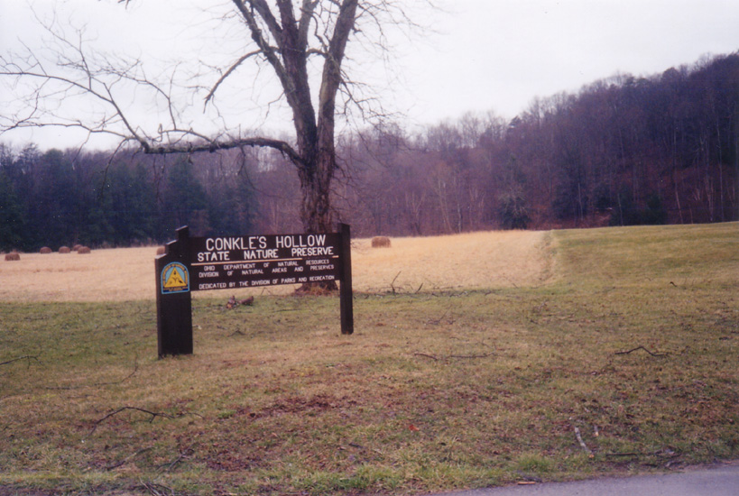
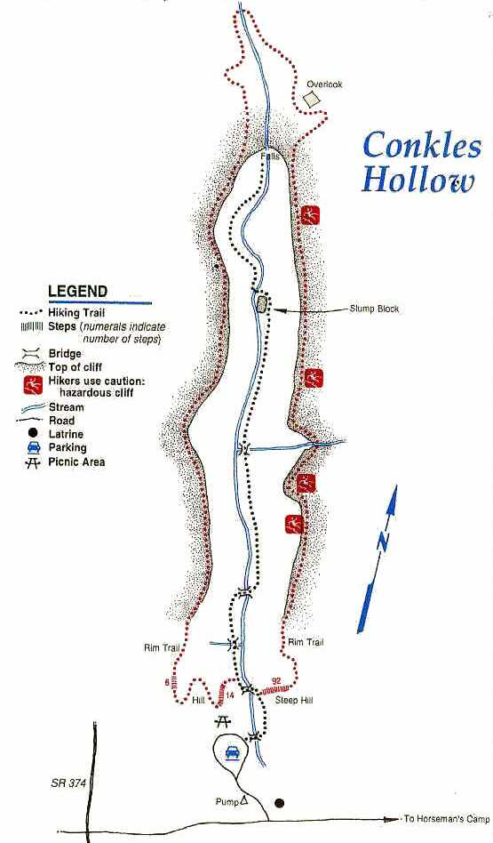
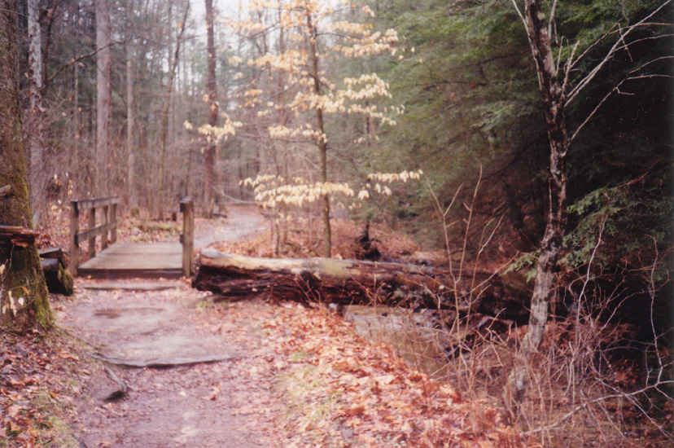
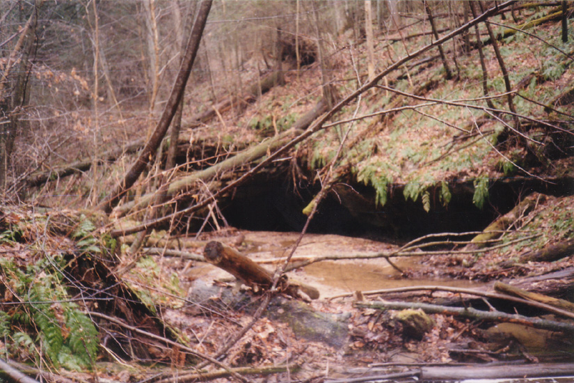
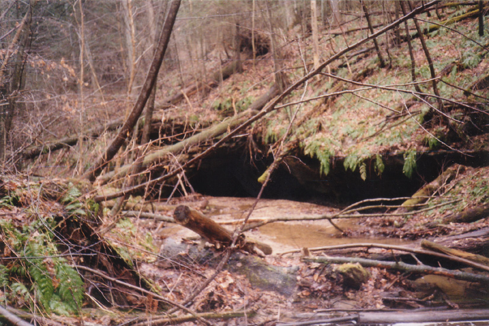
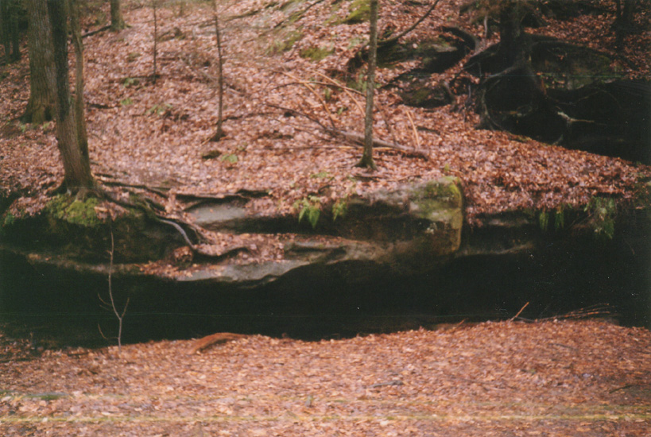

The Ohio Department of Parks and Recreation has a number of nature preserves in Hocking County, near Logan. One of the most impressive is Conkle's Hollow, which is possibly the deepest gorge in the entire state. Rock walls tower 200 feet above the gorge floor, which is so narrow and deep that it's shady even at high noon. The Hollow was named for W.J. Conkle, who left his name and the year 1797 carved in the rock wall.

Conkle's Hollow is also home to an interesting legend and a ghost. The story goes that a band of Indians robbed a flotilla of settlers on the Ohio River and took the money to the Hollow to hide it. They carved an arrow in the rock wall pointing across to the other side, where the money was hidden in a recess. It was only accessible by climbing a hemlock tree. Years later they returned, only to find that the hemlock had fallen down. According to legend, the arrow eroded, but the money is still there. The ghost is that of Old Man Conkle. His ghost roams the Hollow, which seems a likely place for a haunting.

My ex-girlfriend and I visited Conkle's Hollow one rainy morning in March of 2001. It wasn't dark, but since it was so gloomy we figured the ghost might make an exception.
 

Unfortunately, he didn't. We called to Old Man Conkle and left the trail to explore caves in search of ghosts and lost treasure, but nothing happened. We never heard a ghost or found a dollar. We did, however, get a look at some of the most impressive natural sights in the state. Even if you don't see any ghosts, Conkle's Hollow is worth the trip.

For more on Conkle's Hollow, check out the Ohio Department of Parks and Recreation's official site about it.
Back
forgottenohio@yahoo.com